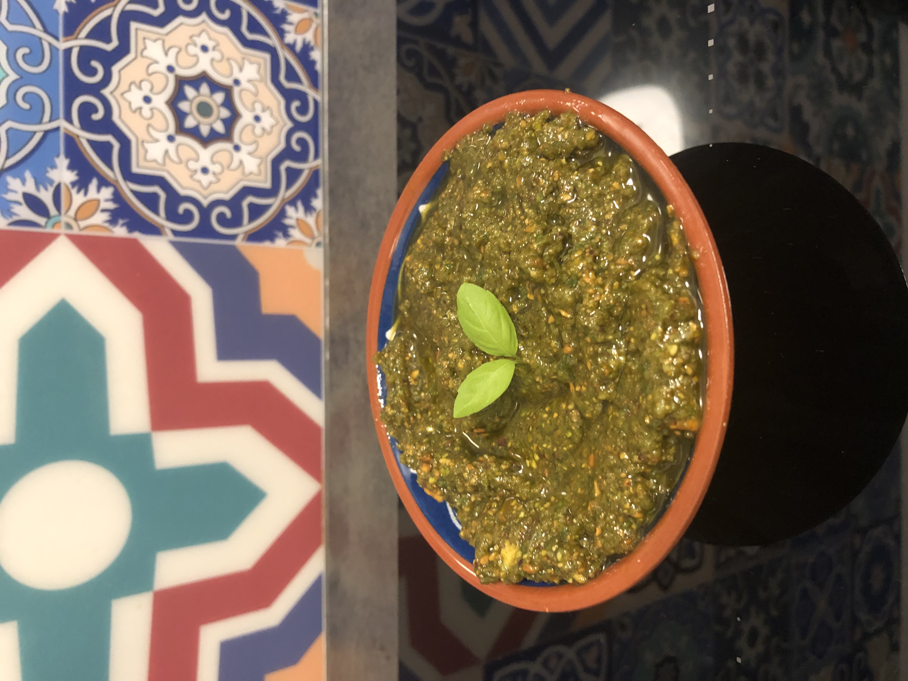

Vegane Buddha Bowl

Eine ausgewogene, nährstoffreiche Bowl mit Quinoa, Süßkartoffeln, Avocado und mehr.
WeiterlesenIndividuelle Beratung für eine nachhaltige und gesunde Lebensweise.
Jetzt Beratung buchen
Hallo, ich bin Sophie, 26 Jahre alt und begeisterte Ernährungsberaterin mit dem Fokus auf pflanzenbasierte Ernährung. Seit meinem 18. Lebensjahr ernähre ich mich pflanzenbasiert, und 2018 bin ich komplett auf eine vegane Ernährung umgestiegen. Meine Ausbildung zur veganen Ernährungsberaterin habe ich bei Ecodemy abgeschlossen, und es bereitet mir große Freude, Menschen dabei zu unterstützen, mehr pflanzliche Lebensmittel in ihren Alltag zu integrieren.
Besonders spannend finde ich die Kombination von Ernährung und Sport. Deshalb plane ich, mich künftig noch weiter im Bereich der Sportlerernährung fortzubilden. Mein Ziel ist es, das Beste aus pflanzlichen Lebensmitteln herauszuholen – für die Gesundheit, die Umwelt und das Tierwohl.
In meinem Alltag arbeite ich als OP-Schwester und studiere Zahnmedizin. Die Ernährungsberatung liegt mir jedoch ebenfalls sehr am Herzen. Mir ist wichtig, eine gesunde Balance zu vermitteln: Niemand muss sich komplett vegan oder vegetarisch ernähren, um von den Vorteilen einer pflanzenbasierten Ernährung zu profitieren.
Eine ausgewogene, nährstoffreiche Bowl mit Quinoa, Süßkartoffeln, Avocado und mehr.
Weiterlesen
Ein erfrischender Smoothie aus Spinat, Banane, Chiasamen und Mandelmilch.
Weiterlesen
Eine leckere und herzhafte Bolognese auf Basis von Linsen und Tomaten.
Weiterlesen
Ein frisches, nussiges Pesto mit einem Hauch von Limette – perfekt zu Pasta oder als Brotaufstrich!
Hast du Fragen oder möchtest einen Termin vereinbaren? Nutze das Kontaktformular oder schreibe mir direkt eine E-Mail.